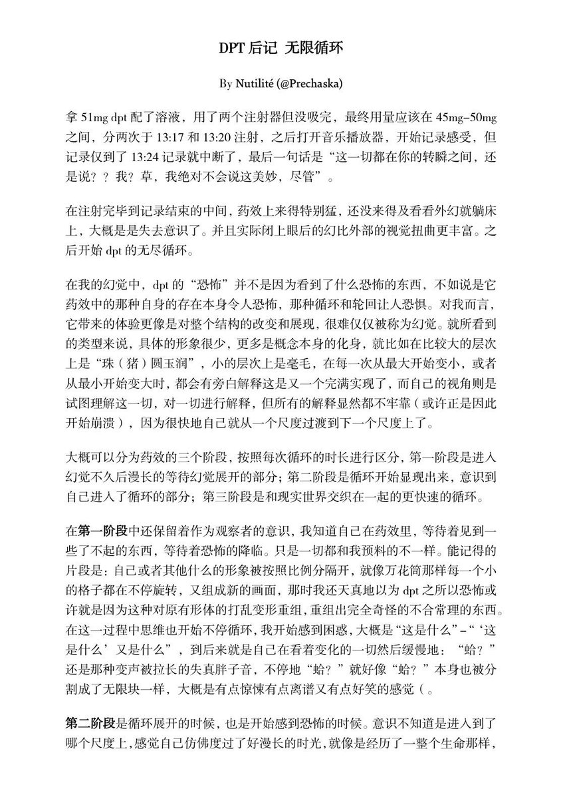
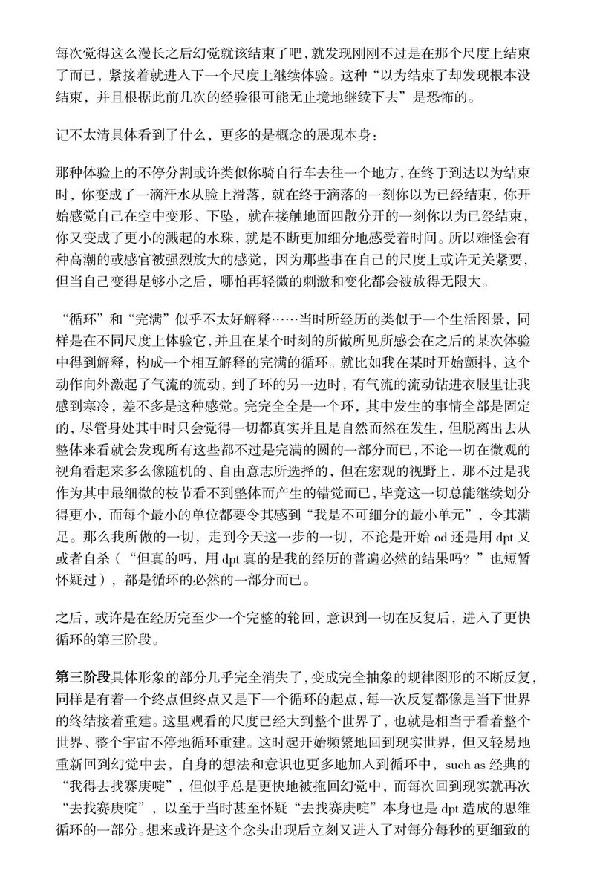
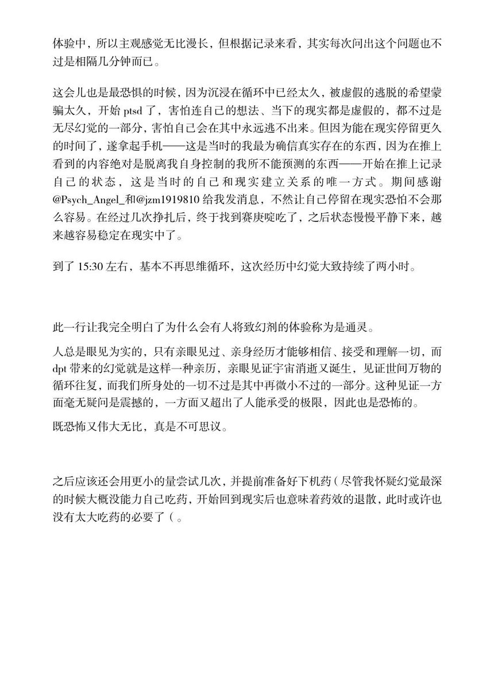

Rhinnschneevall
@RainduRhinns
非常好的描述…我自己在用了不同结构的DPT致多次Ego Death之后,与其说它是无限循环我更愿意说它是无限的Meta化,“元叙事就是元叙事的元叙事”图景与概念之间的极限不断在Meta反转重复,形式和本质的区别不存在了,正如每个刹那间发生的一切,直到混沌本身成为唯一的和谐 我与一切存在的东西都成为了概念本身



Nutilité
@Prechaska
dpt的无限循环，第一次真正意义上的致幻剂体验记录 https://t.co/YhqfqyGjAP